第九章 多元函数微分法及其应用
一元微积分研究的是因变量依赖于一个独立自变量的变化规律. 但是，自然界与工程技术中所遇到的绝大多数客观事物都同时受到多个因素的制约. 例如，理想气体的状态由压强与温度共同决定；长方体的体积由长、宽、高三个尺寸共同决定；电路中消耗的电功率取决于电压与电阻两个变量. 因此，必须把一元微积分推广到多元函数的情形. 本章将建立多元函数的极限、连续、偏导数与全微分的基本概念，推导多元复合函数与隐函数的求导法则，研究反映空间几何方向变化率的方向导数与梯度，建立空间曲面的切平面与法线方程，并深入讨论多元函数的极值与带约束条件的拉格朗日乘数法.
第一节 多元函数的基本概念
一、平面点集与区域
坐标平面上具有某种性质的点 $P(x, y)$ 的集合，称为平面点集，常记作 $E$.
- 邻域：点 $P_0(x_0, y_0)$ 的 $\delta$ 邻域是指开圆盘 $U(P_0, \delta) = \{P \in \mathbf{R}^2 \mid |P P_0| < \delta\}$（图 9-1）；
- 内点、外点与边界点：若存在 $U(P) \subset E$，称 $P$ 为内点；若存在 $U(P) \cap E = \varnothing$，称 $P$ 为外点；若在 $P$ 的任一邻域内既有属于 $E$ 的点又有不属于 $E$ 的点，称 $P$ 为边界点. 边界点的全体称为边界 $\partial E$；
- 区域：连通的开集称为开区域（简称区域）；开区域连同其边界称为闭区域（图 9-2、图 9-3、图 9-4）.
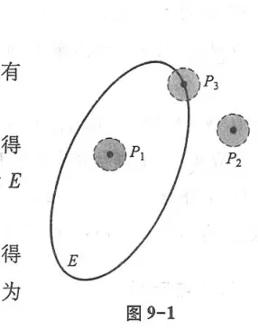
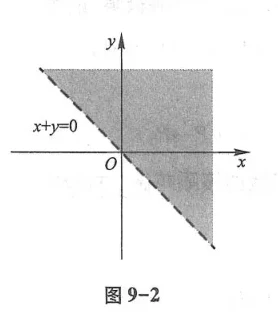
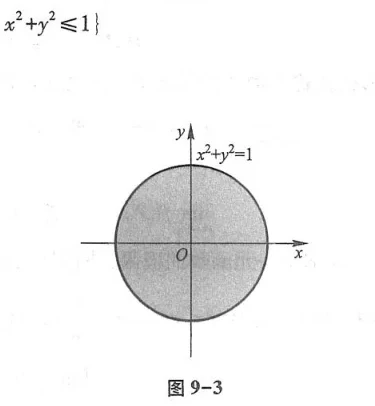
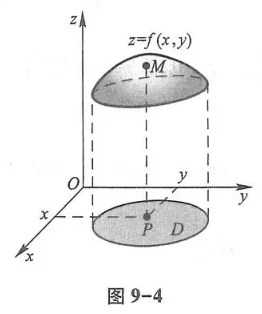
二、二元函数的极限与连续性
设函数 $z = f(x, y)$ 在点 $P_0(x_0, y_0)$ 的去心邻域内有定义. 如果对任意给定的 $\varepsilon > 0$，总存在 $\delta > 0$，使得当 $0 < \sqrt{(x - x_0)^2 + (y - y_0)^2} < \delta$ 时，恒有 $|f(x, y) - L| < \varepsilon$，则称 $L$ 为函数当 $(x, y) \to (x_0, y_0)$ 时的二重极限（全面极限），记作 $\lim_{\substack{x \to x_0 \\ y \to y_0}} f(x, y) = L$.
注意：二重极限要求动点 $P$ 沿任意可能路径趋于 $P_0$ 时函数值均趋于同一个数 $L$. 若沿两条不同路径（如 $y = kx$）极限不同，则二重极限必不存在.
第二节 偏导数
一、偏导数的定义与几何意义
设函数 $z = f(x, y)$ 在点 $(x_0, y_0)$ 的某邻域内有定义. 固定 $y = y_0$，将 $z$ 视为一元函数 $f(x, y_0)$. 如果其在 $x_0$ 处的导数存在，则称此导数为 $f(x, y)$ 在点 $(x_0, y_0)$ 处对 $x$ 的偏导数，记作：
$$f_x(x_0, y_0), \quad z_x|_{(x_0, y_0)}, \quad \left.\frac{\partial z}{\partial x}\right|_{(x_0, y_0)}, \quad \text{或} \quad \left.\frac{\partial f}{\partial x}\right|_{(x_0, y_0)}$$
即：$f_x(x_0, y_0) = \lim_{\Delta x \to 0} \frac{f(x_0 + \Delta x, y_0) - f(x_0, y_0)}{\Delta x}$. 类似地定义对 $y$ 的偏导数 $f_y(x_0, y_0)$.
几何意义：空间曲面 $z = f(x, y)$ 被垂直平面 $y = y_0$ 所截得到平面曲线 $C_x$（图 9-5）. 偏导数 $f_x(x_0, y_0)$ 就是曲线 $C_x$ 在点 $M_0$ 处的切线对 $x$ 轴的斜率；同样，$f_y(x_0, y_0)$ 是截线 $C_y$ 切线对 $y$ 轴的斜率.
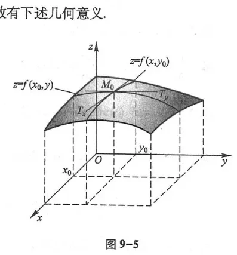
二、高阶偏导数
二阶偏导数有四个：$f_{xx} = \frac{\partial^2 z}{\partial x^2}, f_{yy} = \frac{\partial^2 z}{\partial y^2}$，以及混合偏导数 $f_{xy} = \frac{\partial^2 z}{\partial x \partial y}, f_{yx} = \frac{\partial^2 z}{\partial y \partial x}$.
如果函数 $z = f(x, y)$ 的两个二阶混合偏导数 $f_{xy}$ 和 $f_{yx}$ 在点 $(x_0, y_0)$ 的邻域内连续，则它们在该点必定相等：$f_{xy}(x_0, y_0) = f_{yx}(x_0, y_0)$.
第三节 全微分
如果函数 $z = f(x, y)$ 的全增量 $\Delta z = f(x_0 + \Delta x, y_0 + \Delta y) - f(x_0, y_0)$ 可以表示为：
$$\Delta z = A \Delta x + B \Delta y + o(\rho) \quad (\rho = \sqrt{\Delta x^2 + \Delta y^2} \to 0)$$
其中 $A, B$ 与 $\Delta x, \Delta y$ 无关，则称函数在点 $(x_0, y_0)$ 可微，线性主部 $A \Delta x + B \Delta y$ 称为全微分，记作 $dz$：
$$dz = \frac{\partial z}{\partial x} dx + \frac{\partial z}{\partial y} dy$$
可微性、偏导数与连续性的关系：
- 可微必连续；可微必有一阶偏导数，且 $A = f_x, B = f_y$；
- 偏导数存在不一定连续，更不一定可微；
- 充分条件：若一阶偏导数 $f_x, f_y$ 在该点连续，则函数在该点必可微.
第四节与第五节 多元复合函数与隐函数求导法则
一、复合函数求导链式法则
若 $z = f(u, v)$，而 $u = \varphi(x, y), v = \psi(x, y)$，则：
$$\frac{\partial z}{\partial x} = \frac{\partial z}{\partial u}\frac{\partial u}{\partial x} + \frac{\partial z}{\partial v}\frac{\partial v}{\partial x}, \qquad \frac{\partial z}{\partial y} = \frac{\partial z}{\partial u}\frac{\partial u}{\partial y} + \frac{\partial z}{\partial v}\frac{\partial v}{\partial y}$$
二、隐函数存在定理与求导公式
由方程 $F(x, y, z) = 0$ 确定隐函数 $z = z(x, y)$，在 $F_z \ne 0$ 时，其偏导数为：
$$\frac{\partial z}{\partial x} = -\frac{F_x}{F_z}, \qquad \frac{\partial z}{\partial y} = -\frac{F_y}{F_z}$$
第六节 多元函数微分学的几何应用
一、空间曲线的切线与法平面
空间曲线参数方程为 $\boldsymbol{r}(t) = (x(t), y(t), z(t))$（图 9-6、图 9-7）. 点 $t_0$ 处的切向量为 $\boldsymbol{T} = (x'(t_0), y'(t_0), z'(t_0))$.
切线方程为：$\frac{x - x_0}{x'(t_0)} = \frac{y - y_0}{y'(t_0)} = \frac{z - z_0}{z'(t_0)}$；法平面方程为：$x'(t_0)(x - x_0) + y'(t_0)(y - y_0) + z'(t_0)(z - z_0) = 0$.
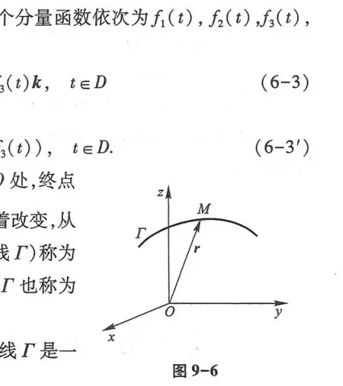
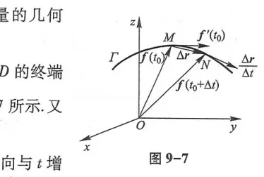
二、空间曲面的切平面与法线
对于隐式曲面 $F(x, y, z) = 0$（图 9-8、图 9-9），在点 $M_0(x_0, y_0, z_0)$ 处的法向量为：
$$\boldsymbol{n} = (F_x(M_0), F_y(M_0), F_z(M_0))$$
切平面方程：$F_x(M_0)(x - x_0) + F_y(M_0)(y - y_0) + F_z(M_0)(z - z_0) = 0$；
法线方程：$\frac{x - x_0}{F_x(M_0)} = \frac{y - y_0}{F_y(M_0)} = \frac{z - z_0}{F_z(M_0)}$.
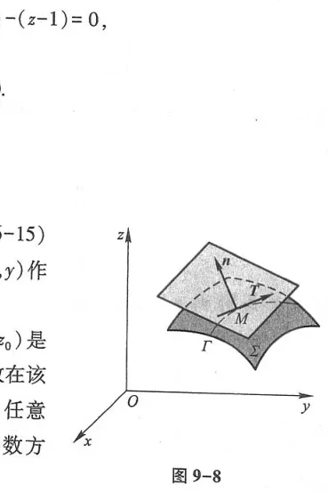
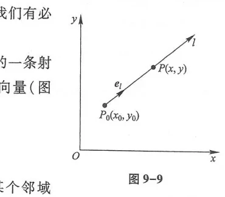
第七节 方向导数与梯度
一、方向导数
设 $\boldsymbol{l} = (\cos\alpha, \cos\beta)$ 为平面上的单位方向向量. 函数 $f(x, y)$ 沿方向 $\boldsymbol{l}$ 的方向导数为（图 9-10）：
$$\frac{\partial f}{\partial \boldsymbol{l}} = \lim_{t \to 0^+} \frac{f(x_0 + t\cos\alpha, y_0 + t\cos\beta) - f(x_0, y_0)}{t} = f_x \cos\alpha + f_y \cos\beta$$
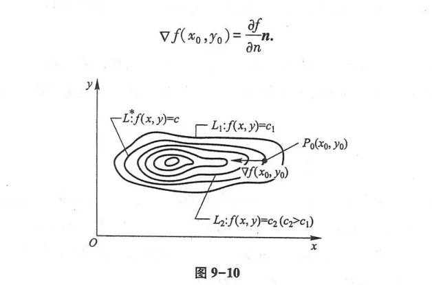
二、梯度
向量 $\operatorname{\mathbf{grad}} f = \nabla f = \left(\frac{\partial f}{\partial x}, \frac{\partial f}{\partial y}\right)$ 称为函数 $f(x, y)$ 在该点处的梯度.
核心几何性质：
- 方向导数等于梯度与方向向量的点积：$\frac{\partial f}{\partial \boldsymbol{l}} = \nabla f \cdot \boldsymbol{l} = |\nabla f| \cos\theta$；
- 当 $\boldsymbol{l}$ 与梯度同向时（$\theta = 0$），方向导数取得最大值 $|\nabla f|$；
- 梯度的方向是函数增长最快的方向，梯度的模是这个最大增长率；
- 梯度恒垂直于通过该点的等值线（或等值面）.
第八节与第九节 多元函数的极值与最值
一、无条件极值充分条件
驻点处记 $A = f_{xx}, B = f_{xy}, C = f_{yy}, \Delta = AC - B^2$：
- 若 $AC - B^2 > 0$：当 $A < 0$ 时有极大值；当 $A > 0$ 时有极小值；
- 若 $AC - B^2 < 0$：该点不是极值点（鞍点）；
- 若 $AC - B^2 = 0$：失效，需借助更高阶项或其他方法判定.
二、条件极值与拉格朗日乘数法
求函数 $z = f(x, y)$ 在约束条件 $\varphi(x, y) = 0$ 下的极值（图 9-11、图 9-12、图 9-13）.
构造拉格朗日函数：$L(x, y, \lambda) = f(x, y) + \lambda \varphi(x, y)$，联立求解一阶偏导数全为零的方程组：
$$\begin{cases} L_x = f_x + \lambda \varphi_x = 0 \\ L_y = f_y + \lambda \varphi_y = 0 \\ L_\lambda = \varphi(x, y) = 0 \end{cases}$$
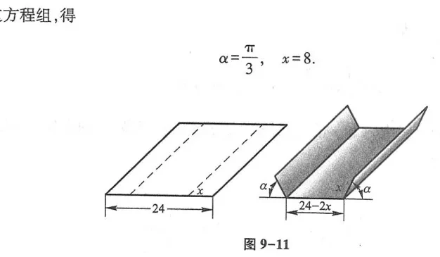
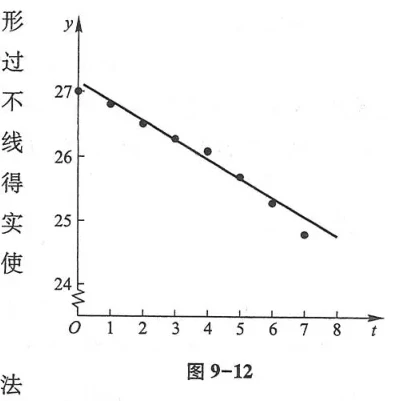
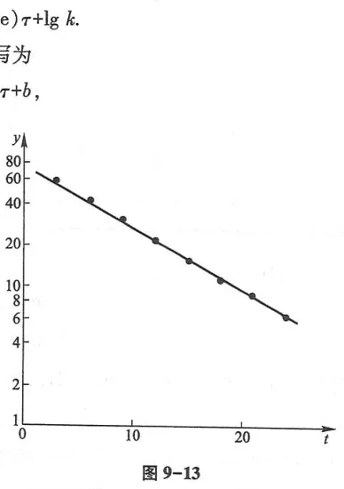
总习题九
1. 设 $z = \ln(x^2 + y^2)$，证明：$\frac{\partial^2 z}{\partial x^2} + \frac{\partial^2 z}{\partial y^2} = 0$（满足二维拉普拉斯方程）.
证：$\frac{\partial z}{\partial x} = \frac{2x}{x^2 + y^2}, \frac{\partial^2 z}{\partial x^2} = \frac{2(x^2 + y^2) - 2x(2x)}{(x^2 + y^2)^2} = \frac{2(y^2 - x^2)}{(x^2 + y^2)^2}$.
由对称性，$\frac{\partial^2 z}{\partial y^2} = \frac{2(x^2 - y^2)}{(x^2 + y^2)^2}$.
两式相加：$\frac{\partial^2 z}{\partial x^2} + \frac{\partial^2 z}{\partial y^2} = \frac{2(y^2 - x^2 + x^2 - y^2)}{(x^2 + y^2)^2} = 0$. 证毕.
2. 求球面 $x^2 + y^2 + z^2 = 14$ 在点 $(1, 2, 3)$ 处的切平面方程与法线方程.
解：令 $F(x, y, z) = x^2 + y^2 + z^2 - 14$.
梯度法向量 $\boldsymbol{n} = (2x, 2y, 2z)|_{(1, 2, 3)} = (2, 4, 6) \sim (1, 2, 3)$.
切平面方程：$1(x - 1) + 2(y - 2) + 3(z - 3) = 0 \implies x + 2y + 3z - 14 = 0$.
法线方程：$\frac{x - 1}{1} = \frac{y - 2}{2} = \frac{z - 3}{3}$.